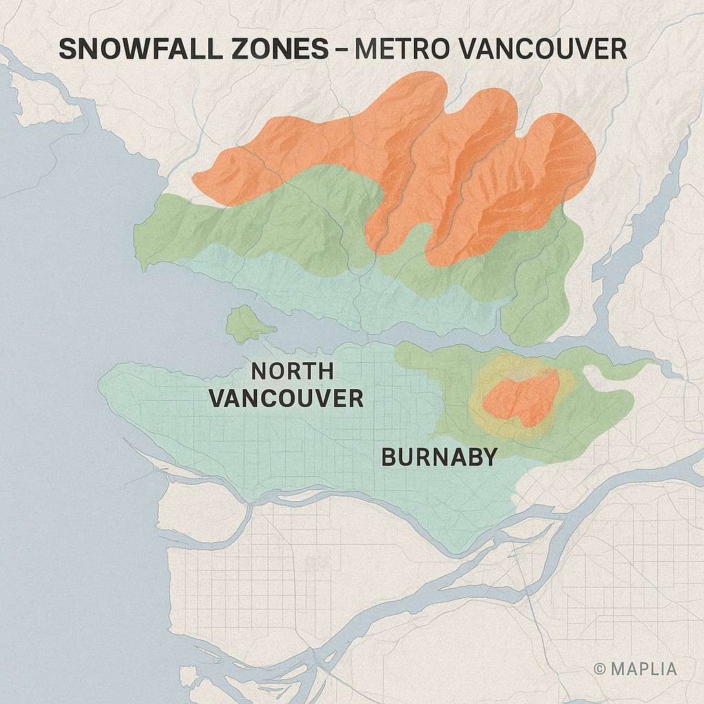
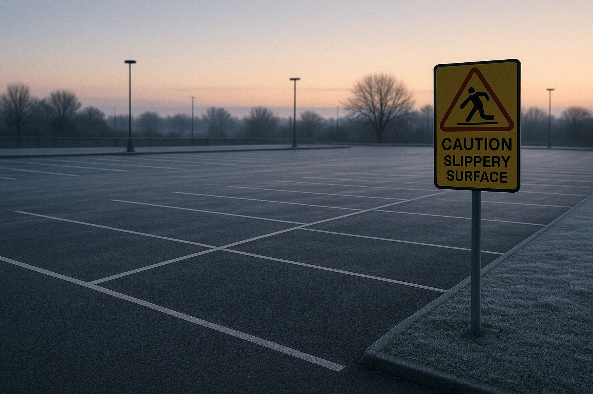

+1 (604) 366-8713
Get a Free Quote
Snow Removal Advice for Vancouver Property Managers
April 18, 2025
Salt vs. Brine: What Works Best for Ice Control in Vancouver?
April 18, 2025
Snow Removal Costs in Vancouver: What to Expect

April 18, 2025
Vancouver Snowfall Map: What’s Considered a Plow-Worthy Event?

April 18, 2025
The True Cost of Slippery Parking Lots: Liability, Lawsuits, and Loss of Trust
April 18, 2025
How to Choose the Right Snow Removal Partner in Vancouver (Contractor vs. Ops Team)